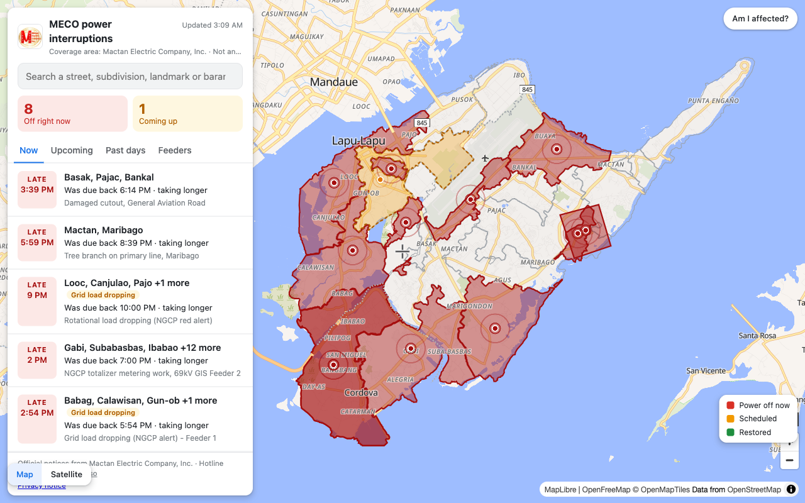
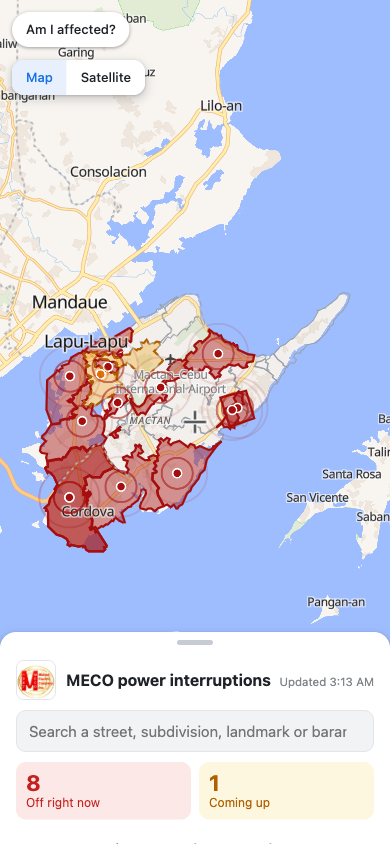
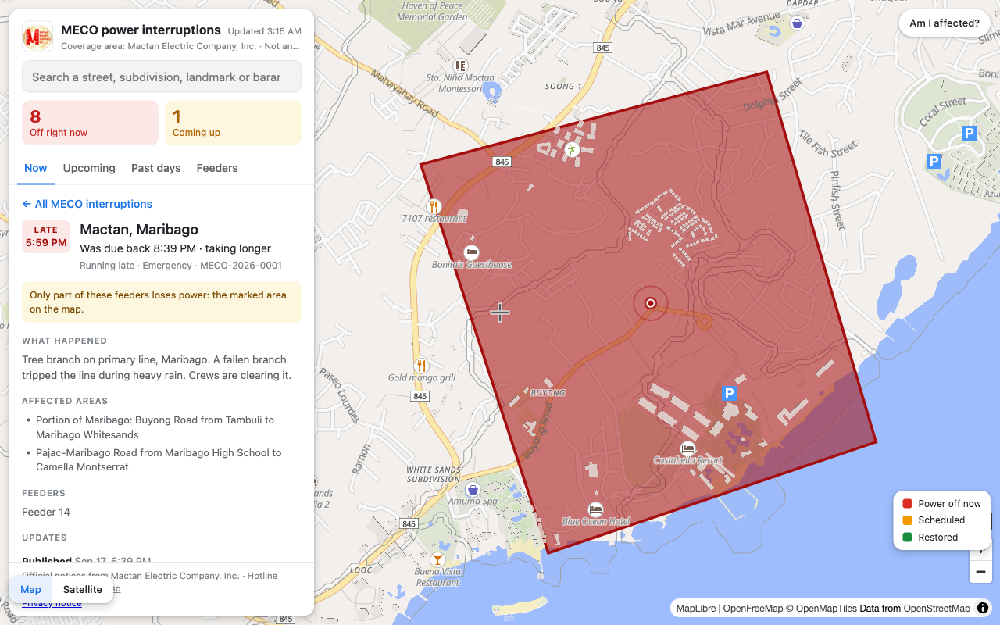
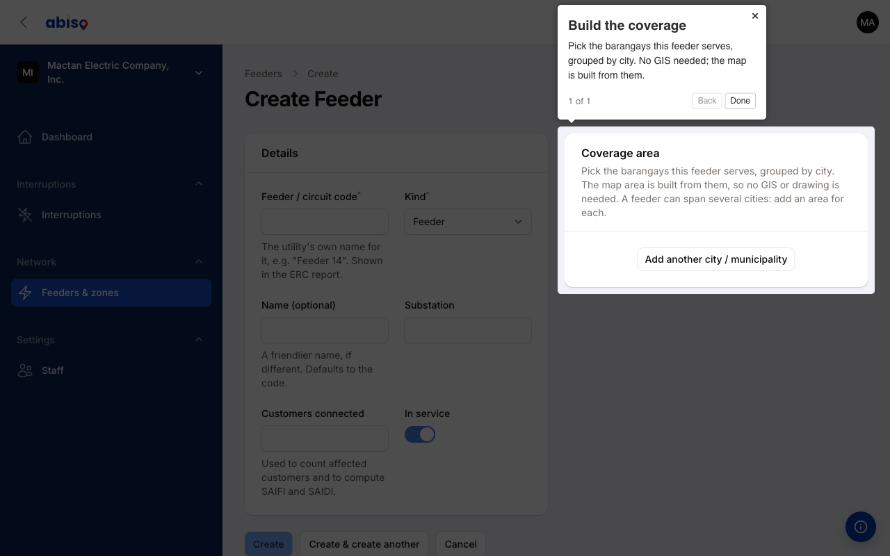
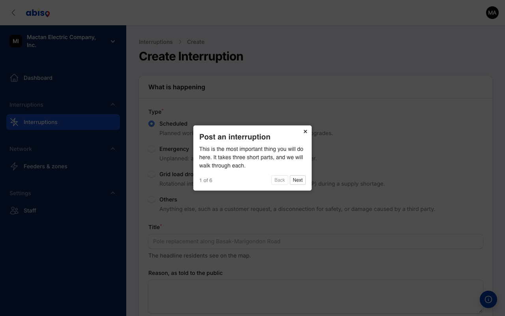
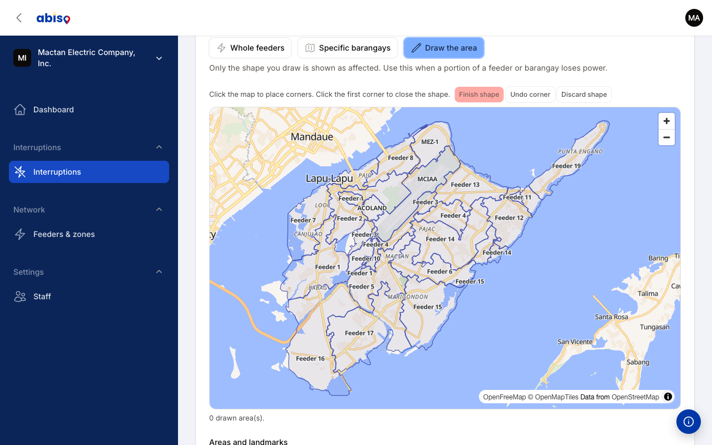
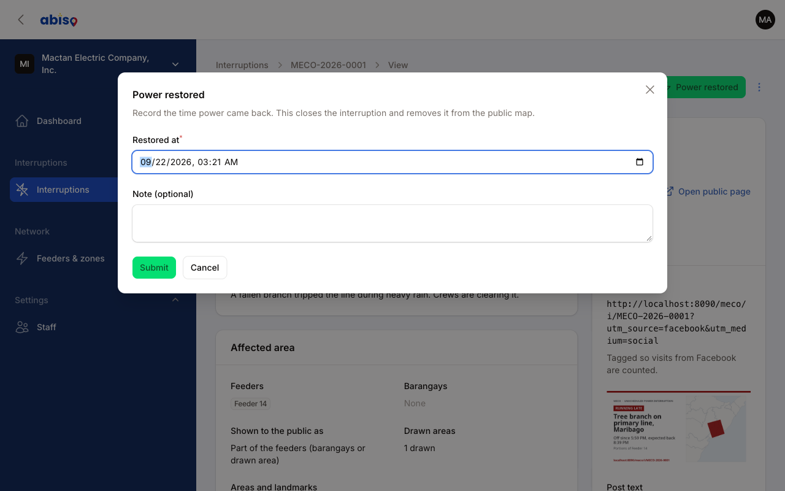
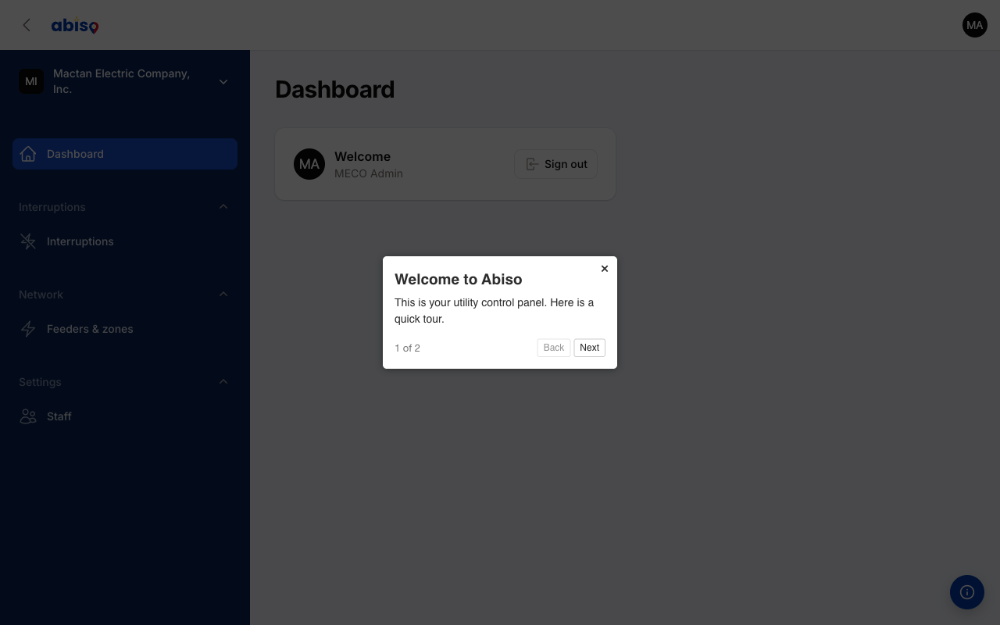

<title>How Abiso Works</title>
<link rel="preconnect" href="https://fonts.googleapis.com">
<link rel="preconnect" href="https://fonts.gstatic.com" crossorigin>
<link rel="stylesheet" href="https://fonts.googleapis.com/css2?family=Poppins:wght@500;600;700;800&family=Instrument+Sans:wght@400;500;600&display=swap">
<style>
  :root {
    --brand: #0038a8;
    --brand-deep: #0b2559;
    --red: #ce1126;
    --gold: #fcd116;
    --ink: #0d1b34;
    --muted: #55617a;
    --ground: #eef1f7;
    --card: #ffffff;
    --line: #dbe1ec;
    --frame: #f4f6fb;
    --shadow: 24px 40px 80px -40px rgba(11, 37, 89, .45);
    --maxw: 1120px;
    --disp: "Poppins", "Trebuchet MS", sans-serif;
    --body: "Instrument Sans", system-ui, -apple-system, sans-serif;
  }
  @media (prefers-color-scheme: dark) {
    :root:not([data-theme="light"]) {
      --brand: #6f9bff;
      --brand-deep: #d8e3ff;
      --ink: #eaf0fb;
      --muted: #9fb0cc;
      --ground: #070d1a;
      --card: #101a30;
      --line: #223252;
      --frame: #0b1424;
      --shadow: 24px 40px 80px -44px rgba(0, 0, 0, .8);
    }
  }
  :root[data-theme="dark"] {
    --brand: #6f9bff;
    --brand-deep: #d8e3ff;
    --ink: #eaf0fb;
    --muted: #9fb0cc;
    --ground: #070d1a;
    --card: #101a30;
    --line: #223252;
    --frame: #0b1424;
    --shadow: 24px 40px 80px -44px rgba(0, 0, 0, .8);
  }

  * { box-sizing: border-box; }
  body {
    margin: 0;
    background: var(--ground);
    color: var(--ink);
    font-family: var(--body);
    line-height: 1.6;
    -webkit-font-smoothing: antialiased;
  }
  .wrap { max-width: var(--maxw); margin: 0 auto; padding-inline: 20px; }

  /* Header */
  header.site {
    position: sticky; top: env(safe-area-inset-top, 0px); z-index: 20;
    background: color-mix(in srgb, var(--ground) 88%, transparent);
    backdrop-filter: blur(10px);
    border-bottom: 1px solid var(--line);
  }
  .site .wrap { display: flex; align-items: center; justify-content: space-between; padding-block: 14px; }
  .logo { display: flex; align-items: center; gap: 10px; font-family: var(--disp); font-weight: 800; font-size: 1.3rem; color: var(--brand); letter-spacing: -.02em; text-decoration: none; }
  .logo svg { display: block; }
  .site nav a { color: var(--muted); text-decoration: none; font-weight: 600; font-size: .92rem; }
  .site nav a:hover { color: var(--ink); }
  .live-dot { display: inline-flex; align-items: center; gap: 7px; font-size: .82rem; font-weight: 600; color: var(--muted); }
  .live-dot i { width: 8px; height: 8px; border-radius: 50%; background: var(--red); box-shadow: 0 0 0 0 rgba(206,17,38,.5); animation: pulse 2.4s infinite; }
  @keyframes pulse { 0%{box-shadow:0 0 0 0 rgba(206,17,38,.5);} 70%{box-shadow:0 0 0 9px rgba(206,17,38,0);} 100%{box-shadow:0 0 0 0 rgba(206,17,38,0);} }
  @media (prefers-reduced-motion: reduce) { .live-dot i { animation: none; } }

  /* Hero */
  .hero { padding-block: clamp(48px, 8vw, 92px) 30px; }
  .eyebrow { font-family: var(--disp); text-transform: uppercase; letter-spacing: .16em; font-size: .74rem; font-weight: 600; color: var(--brand); margin: 0 0 18px; }
  h1 { font-family: var(--disp); font-weight: 800; letter-spacing: -.03em; line-height: 1.04; font-size: clamp(2.1rem, 6vw, 3.7rem); margin: 0; text-wrap: balance; max-width: 15ch; }
  h1 .u { color: var(--brand); }
  .lede { font-size: clamp(1.05rem, 2.4vw, 1.28rem); color: var(--muted); max-width: 60ch; margin: 22px 0 0; }
  .flag { height: 5px; width: 128px; border-radius: 5px; margin-top: 30px;
    background: linear-gradient(90deg, var(--brand) 0 34%, var(--red) 34% 67%, var(--gold) 67% 100%); }

  /* Frames */
  figure { margin: 0; }
  .browser { background: var(--frame); border: 1px solid var(--line); border-radius: 16px; box-shadow: var(--shadow); overflow: hidden; }
  .browser .bar { display: flex; align-items: center; gap: 7px; padding: 12px 15px; border-bottom: 1px solid var(--line); background: color-mix(in srgb, var(--frame) 60%, var(--card)); }
  .browser .bar span { width: 11px; height: 11px; border-radius: 50%; background: var(--line); }
  .browser .bar span:nth-child(1){ background:#ff5f57; } .browser .bar span:nth-child(2){ background:#febc2e; } .browser .bar span:nth-child(3){ background:#28c840; }
  .browser .bar b { margin-left: 10px; font-weight: 500; font-size: .78rem; color: var(--muted); font-family: var(--body); }
  .browser img { display: block; width: 100%; }
  .hero-shot { margin-top: 42px; }

  figcaption { color: var(--muted); font-size: .9rem; margin-top: 12px; text-align: center; }

  /* Section scaffolding */
  section { padding-block: clamp(46px, 8vw, 86px); }
  .band { background: var(--card); border-block: 1px solid var(--line); }
  .kicker { font-family: var(--disp); text-transform: uppercase; letter-spacing: .15em; font-size: .74rem; font-weight: 600; color: var(--red); margin: 0 0 12px; }
  h2 { font-family: var(--disp); font-weight: 700; letter-spacing: -.02em; font-size: clamp(1.6rem, 4vw, 2.4rem); margin: 0; text-wrap: balance; max-width: 20ch; }
  .section-intro { color: var(--muted); font-size: 1.08rem; max-width: 56ch; margin: 16px 0 0; }
  .head { margin-bottom: 40px; }

  .duo { display: grid; grid-template-columns: 1fr 1.35fr; gap: 34px; align-items: center; }
  .duo.rev { grid-template-columns: 1.35fr 1fr; }
  .duo.rev .txt { order: 2; }
  .phone-wrap { display: flex; justify-content: center; }
  .phone { width: min(300px, 78%); border: 9px solid var(--brand-deep); border-radius: 34px; overflow: hidden; box-shadow: var(--shadow); background: var(--brand-deep); }
  .phone img { display: block; width: 100%; }

  /* Steps */
  .step { display: grid; grid-template-columns: 1.25fr 1fr; gap: 40px; align-items: center; padding-block: 34px; border-top: 1px solid var(--line); }
  .step:first-of-type { border-top: 0; }
  .step .media { order: 1; }
  .step.rev .media { order: 2; }
  .num { display: inline-flex; align-items: baseline; gap: 10px; font-family: var(--disp); margin-bottom: 14px; }
  .num b { font-size: 2.3rem; font-weight: 800; color: var(--brand); letter-spacing: -.03em; line-height: 1; }
  .num em { font-style: normal; text-transform: uppercase; letter-spacing: .14em; font-size: .72rem; font-weight: 600; color: var(--muted); }
  .step h3 { font-family: var(--disp); font-weight: 600; font-size: 1.35rem; letter-spacing: -.01em; margin: 0 0 8px; }
  .step p { margin: 0; color: var(--muted); font-size: 1.02rem; max-width: 42ch; }

  /* Onboarding callout */
  .callout { display: grid; grid-template-columns: 1fr 1.2fr; gap: 34px; align-items: center;
    background: linear-gradient(135deg, var(--brand-deep), var(--brand)); color: #fff; border-radius: 22px; padding: clamp(24px, 4vw, 44px); box-shadow: var(--shadow); }
  .callout h3 { font-family: var(--disp); font-weight: 700; font-size: clamp(1.4rem, 3vw, 2rem); margin: 0 0 12px; letter-spacing: -.02em; text-wrap: balance; }
  .callout p { margin: 0; color: rgba(255,255,255,.86); font-size: 1.05rem; max-width: 42ch; }
  .callout .browser { box-shadow: 0 30px 60px -30px rgba(0,0,0,.5); }

  /* CTA */
  .cta { text-align: center; }
  .cta h2 { margin-inline: auto; }
  .cta p { color: var(--muted); font-size: 1.1rem; max-width: 50ch; margin: 16px auto 0; }
  .actions { display: flex; flex-wrap: wrap; gap: 14px; justify-content: center; margin-top: 30px; }
  .btn { font-family: var(--disp); font-weight: 600; text-decoration: none; padding: 13px 24px; border-radius: 12px; font-size: .98rem; }
  .btn.primary { background: var(--brand); color: #fff; }
  .btn.primary:hover { background: var(--brand-deep); }
  .btn.ghost { border: 1px solid var(--line); color: var(--ink); }
  .btn.ghost:hover { border-color: var(--brand); color: var(--brand); }

  footer.site { border-top: 1px solid var(--line); padding-block: 34px; color: var(--muted); font-size: .86rem; }
  footer .wrap { display: flex; flex-wrap: wrap; gap: 12px 26px; justify-content: space-between; align-items: center; }

  @media (max-width: 760px) {
    .duo, .duo.rev, .step, .step.rev, .callout { grid-template-columns: 1fr; }
    .duo.rev .txt, .step.rev .media, .step .media { order: 0; }
    .step p, .section-intro, .lede { max-width: none; }
    .callout { text-align: left; }
  }
</style>

<header class="site">
  <div class="wrap">
    <a class="logo" href="#top" aria-label="Abiso">
      <svg width="22" height="26" viewBox="0 0 22 26" aria-hidden="true"><path d="M11 0C4.9 0 0 4.8 0 10.8 0 18.9 11 26 11 26s11-7.1 11-15.2C22 4.8 17.1 0 11 0z" fill="#0038a8"/><path d="M11 26s6.4-4.1 9.2-10.2L11 8.5V26z" fill="#ce1126"/><circle cx="11" cy="10.6" r="5.4" fill="#fff"/><circle cx="11" cy="10.6" r="2.2" fill="#fcd116"/></svg>
      abiso
    </a>
    <nav aria-label="Primary">
      <span class="live-dot"><i></i>Live for Mactan Electric Company</span>
    </nav>
  </div>
</header>

<main id="top">
  <section class="hero">
    <div class="wrap">
      <p class="eyebrow">Public power-interruption advisories</p>
      <h1>Every outage you declare, on one <span class="u">live public map</span>.</h1>
      <p class="lede">Abiso turns your interruption notices into a clear, always-current map your customers can check anytime, and gives your team a simple portal to post them in minutes. Here is how it works.</p>
      <div class="flag" aria-hidden="true"></div>
      <figure class="hero-shot">
        <div class="browser">
          <div class="bar"><span></span><span></span><span></span><b>abisoph.com/meco</b></div>
          
        </div>
        <figcaption>The public map for Mactan Electric Company. Affected feeders shade red, scheduled work glows amber.</figcaption>
      </figure>
    </div>
  </section>

  <section class="band">
    <div class="wrap">
      <div class="head">
        <p class="kicker">What your customers see</p>
        <h2>A single place to check, instead of scrolling Facebook.</h2>
        <p class="section-intro">No login, no app to install. Anyone in your franchise area opens one link and sees exactly what is out, where, and until when.</p>
      </div>

      <div class="duo">
        <div class="txt">
          <h3 style="font-family:var(--disp);font-weight:600;font-size:1.3rem;margin:0 0 8px;">Built for the phone first</h3>
          <p style="color:var(--muted);margin:0;font-size:1.05rem;">Most people check during an outage, on mobile, in the dark. So the map leads, the list follows, and search finds a street or barangay in a tap.</p>
        </div>
        <div class="phone-wrap">
          <figure class="phone">
            
          </figure>
        </div>
      </div>

      <div class="duo rev" style="margin-top:52px;">
        <div class="media">
          <figure>
            <div class="browser">
              <div class="bar"><span></span><span></span><span></span><b>abisoph.com/meco/i/MECO-2026-0001</b></div>
              
            </div>
          </figure>
        </div>
        <div class="txt">
          <h3 style="font-family:var(--disp);font-weight:600;font-size:1.3rem;margin:0 0 8px;">Every notice has its own page</h3>
          <p style="color:var(--muted);margin:0;font-size:1.05rem;">Plain-language reason, the exact affected area, the landmarks people recognise, and a status they can trust. One tap shares it straight to Facebook, worded the way you already post.</p>
        </div>
      </div>
    </div>
  </section>

  <section>
    <div class="wrap">
      <div class="head">
        <p class="kicker">How your team runs it</p>
        <h2>From "power is out" to a public notice in minutes.</h2>
        <p class="section-intro">No GIS team, no spreadsheets, no training course. If your staff can post on Facebook, they can run Abiso. Here is the whole job, start to finish.</p>
      </div>

      <div class="step">
        <div class="media">
          <figure><div class="browser"><div class="bar"><span></span><span></span><span></span><b>Create feeder</b></div></div></figure>
        </div>
        <div class="txt">
          <p class="num"><b>01</b><em>Set up once</em></p>
          <h3>Add your feeders, pick their barangays</h3>
          <p>Tell Abiso which barangays each feeder serves, grouped by city. No shapefiles, no GIS. It builds the map coverage from your choices.</p>
        </div>
      </div>

      <div class="step rev">
        <div class="media">
          <figure><div class="browser"><div class="bar"><span></span><span></span><span></span><b>Post an interruption</b></div></div></figure>
        </div>
        <div class="txt">
          <p class="num"><b>02</b><em>Post it</em></p>
          <h3>A guided form, not a blank page</h3>
          <p>Staff choose what happened, when, and which feeders are affected. Abiso even warns when a notice would miss the advance-notice window customers are owed.</p>
        </div>
      </div>

      <div class="step">
        <div class="media">
          <figure><div class="browser"><div class="bar"><span></span><span></span><span></span><b>Draw the affected area</b></div></div></figure>
        </div>
        <div class="txt">
          <p class="num"><b>03</b><em>Be precise</em></p>
          <h3>Draw the exact area that lost power</h3>
          <p>When only part of a feeder is down, trace the affected zone right on the map. Customers outside the shape are never alarmed by a notice that is not theirs.</p>
        </div>
      </div>

      <div class="step rev">
        <div class="media">
          <figure><div class="browser"><div class="bar"><span></span><span></span><span></span><b>Power restored</b></div></div></figure>
        </div>
        <div class="txt">
          <p class="num"><b>04</b><em>Close it out</em></p>
          <h3>Mark it restored in one step</h3>
          <p>When power is back, record the time. That is the whole form. The notice closes and clears itself from the public map.</p>
        </div>
      </div>
    </div>
  </section>

  <section class="band">
    <div class="wrap">
      <div class="callout">
        <div class="txt">
          <h3>Your staff are guided from day one</h3>
          <p>A built-in tour walks each person through the portal the first time they open a page, and waits behind an info button after that. Training is not a project.</p>
        </div>
        <div class="media">
          <figure><div class="browser"><div class="bar"><span></span><span></span><span></span><b>admin - Abiso</b></div></div></figure>
        </div>
      </div>
    </div>
  </section>

  <section class="cta">
    <div class="wrap">
      <p class="kicker" style="color:var(--brand);">Get started</p>
      <h2>Bring clear outage advisories to your customers.</h2>
      <p>Abiso is live today for Mactan Electric Company. If you run a Philippine electric utility and want the same for your franchise area, let us show you.</p>
      <div class="actions">
        <a class="btn primary" href="https://abisoph.com" target="_blank" rel="noopener">See the live map</a>
        <a class="btn ghost" href="https://www.facebook.com/abisoph.official" target="_blank" rel="noopener">Talk to us on Facebook</a>
      </div>
    </div>
  </section>
</main>

<footer class="site">
  <div class="wrap">
    <span class="logo" style="font-size:1.05rem;">abiso</span>
    <span>Abiso relays each utility's own official advisories. Independent, and free for the public to use.</span>
    <span>abisoph.com</span>
  </div>
</footer>
